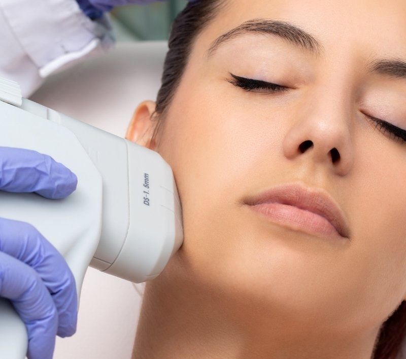
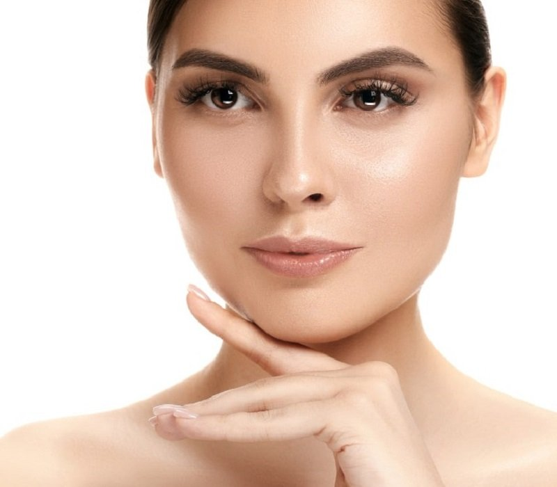
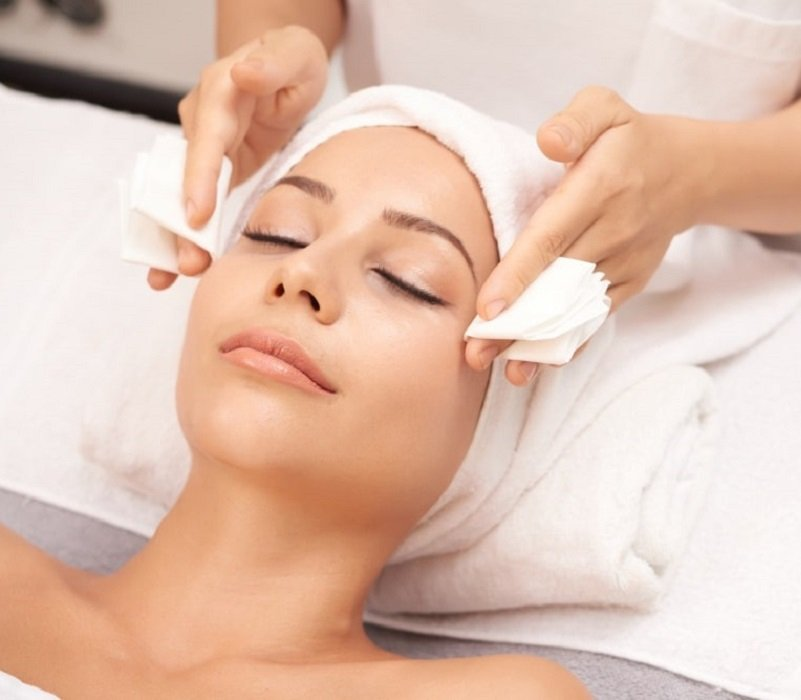
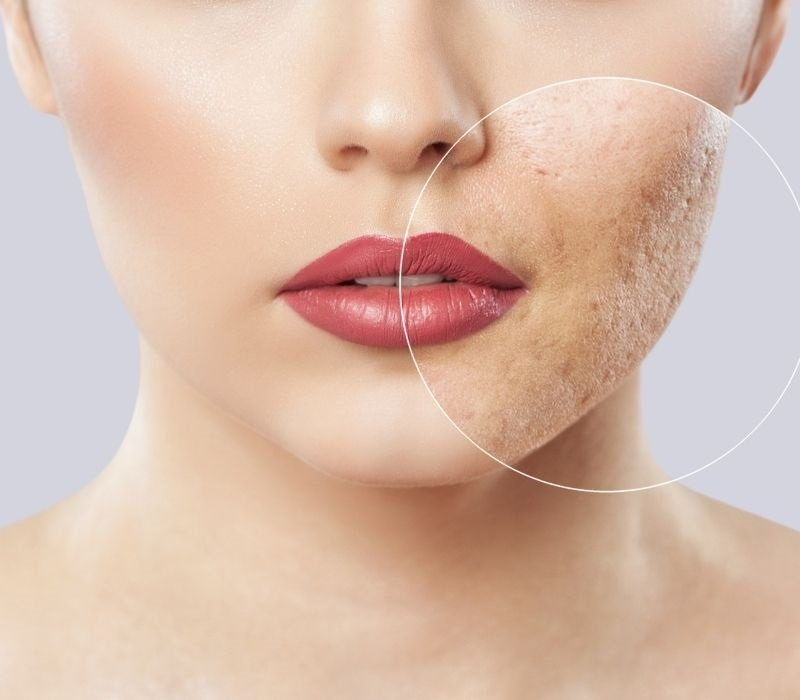
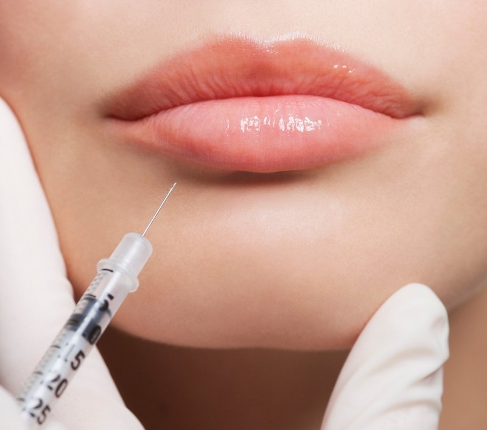
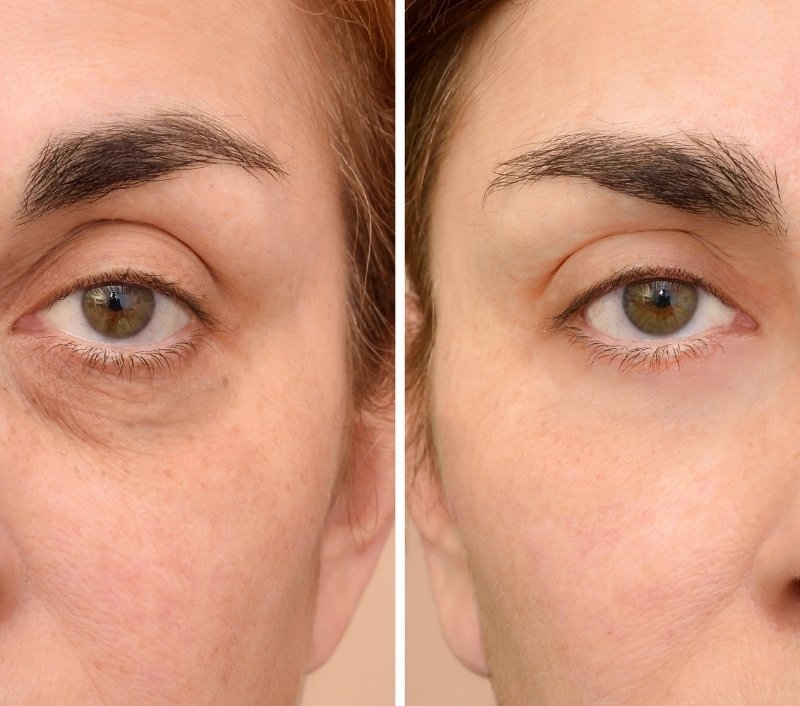

APARATOLOGÍA
HIFU facial
La clínica describe HIFU como una opción de lifting facial sin cirugía. Las sesiones indicadas se deciden según la valoración de cada piel.
MÉTODO ESTÉTICA LOGROÑO
Conoce las opciones de la clínica y resuelve tus dudas
en una valoración previa, sin compromiso.
TRATAMIENTOS FACIALES
La clínica ofrece desde cuidados de limpieza hasta tratamientos de aparatología y medicina estética. La opción y el presupuesto se revisan contigo antes de decidir.

La clínica describe HIFU como una opción de lifting facial sin cirugía. Las sesiones indicadas se deciden según la valoración de cada piel.

Combina limpieza y exfoliación, ayuda a retirar células muertas y termina con hidratación para dejar la piel fresca.

Un cuidado de cabina que la clínica ajusta a las necesidades y características de cada rostro.

La clínica lo ofrece para abordar preocupaciones como marcas de acné, manchas solares, pequeñas arrugas y textura irregular.

El relleno aporta volumen; el perfilado redefine el contorno sin buscar ese aumento. La indicación se valora de forma individual.

Una valoración permite revisar las opciones que la clínica ofrece para tratar el contorno de ojos y la apariencia de cansancio.
La información es orientativa. El equipo médico confirmará la indicación, el procedimiento y el presupuesto en una valoración previa.
UN PRIMER PASO SENCILLO
La valoración previa es gratuita y sin compromiso. El equipo te explica las opciones y resuelve tus dudas antes de que decidas.